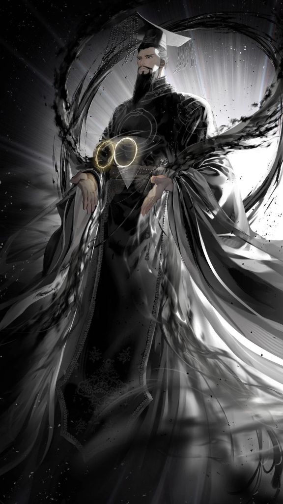

<!DOCTYPE html>
<html lang="en">

<head>
    <meta charset="UTF-8">
    <meta name="viewport" content="width=device-width, initial-scale=1.0">
    <meta name="theme-color" content="#0a0a0f">
    <title>Future King | Regressor's Tale of Cultivation Wiki</title>
    <link rel="icon" type="image/jpeg" href="../../assets/images/seo_eun_hyun_cover.jpg">
    <link rel="stylesheet" href="../../styles/main.css">
    <!-- Google Fonts -->
    <link rel="preconnect" href="https://fonts.googleapis.com">
    <link rel="preconnect" href="https://fonts.gstatic.com" crossorigin>
    <link
        href="https://fonts.googleapis.com/css2?family=Cinzel:wght@600&family=Inter:wght@400;500;600;700&family=Outfit:wght@500;600;700;800&display=swap"
        rel="stylesheet">
    <script type="module" src="https://unpkg.com/ionicons@7.1.0/dist/ionicons/ionicons.esm.js"></script>
    <script nomodule src="https://unpkg.com/ionicons@7.1.0/dist/ionicons/ionicons.js"></script>
    <style>
        /* Future King - Fate/Radiance Theme */
        .character-theme-future-king {
            --accent-primary: #FFD700;
            /* Gold */
            --accent-secondary: #ffffff;
            /* White */
            --text-highlight: #FDB931;
            /* Gold Gradient Start */
            background: linear-gradient(135deg, #000000 0%, #1a1a1a 50%, #2c2c2c 100%) !important;
        }

        /* Hero Background */
        .character-theme-future-king .hero {
            min-height: 60vh;
            background: linear-gradient(to bottom, rgba(0, 0, 0, 0.3) 0%, #000000 100%),
                url('../../assets/images/future_king_v2.png') center top/cover no-repeat;
        }

        /* ... */

        < !-- Sidebar Infobox --><aside class="character-sidebar"><h3 class="infobox-title">The Future King</h3><div class="infobox-image"><div class="carousel-container"><div class="carousel-track"></div></div><div id="carousel-caption"
        style="text-align: center; font-size: 0.8rem; margin-top: 0.5rem; min-height: 1.2em;">Fate Supreme Deity</div></div><div class="infobox-section"><div class="infobox-header">Personal Info</div><div class="infobox-row"><span class="infobox-label">Role</span><span class="infobox-value">Gatekeeper of Mount Sumeru</span></div><div class="infobox-row"><span class="infobox-label">Age</span><span class="infobox-value">Incomprehensible</span></div><div class="infobox-row"><span class="infobox-label">Gender</span><span class="infobox-value">Male</span></div></div><div class="infobox-section"><div class="infobox-header">Prowess</div><div class="infobox-row"><span class="infobox-label">Cultivation</span><span class="infobox-value">True Emperor</span></div><div class="infobox-row"><span class="infobox-label">Dao</span><span class="infobox-value">Absolute of Fate,
        Totality<br>Radiance (Formerly)</span></div></div><div class="infobox-section"><div class="infobox-header">Aliases</div><div class="aliases-list">Fate Supreme Deity<br>The Gatekeeper<br>Gu Ju<br>Blackie / Black Snake<br>God of Hope<br>Hong Fan Gu Ju<br>Hong Fan </div></div></aside>< !-- Comments Section --><div id="comments-section"></div></div></main><script src="../../scripts/editor.js"></script><script src="../../scripts/comments.js"></script><script src="../../scripts/main.js"></script></body></html>